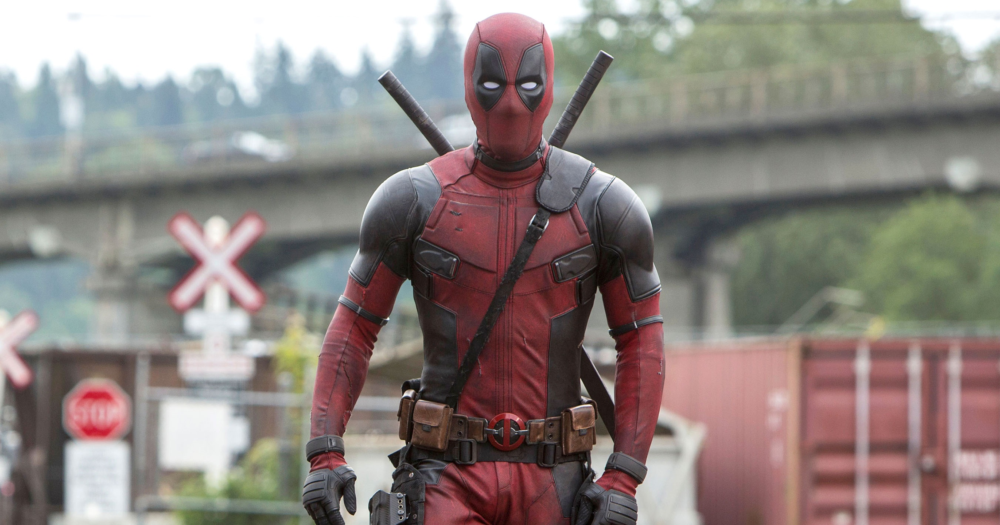

Deadpool
 Deadpool, azaz Wade Winston Wilson egy kitalált szereplő, szuperhős a Marvel Comics képregényeiben. A szereplőt Rob Liefeld és Fabian Nicieza alkotta meg. Első megjelenése a The New Mutants 98. számában volt, 1991 februárjában.
Deadpool, azaz Wade Winston Wilson egy kitalált szereplő, szuperhős a Marvel Comics képregényeiben. A szereplőt Rob Liefeld és Fabian Nicieza alkotta meg. Első megjelenése a The New Mutants 98. számában volt, 1991 februárjában.
Élete
Életének korai szakasza zavaros, valamint a későbbi elmebajos állapotában, az emlékeinek elbeszélése sem könnyítik meg ennek az időszaknak a feltárását. Az első biztos pont, hogy valahol Kanadában született, a város neve viszont ismeretlen. Az ezt követő történetek viszont sok ellentmondást okozhatnak. Néhány történetében azt meséli, hogy szülei rosszul bántak vele, édesanyja rákban halt meg amikor ő még fiatal volt, édesapja pedig katonaként szolgált, aki bántalmazta is őt.[1] Már fiatalon bérgyilkosi munkákat vállalt, olyanok ellen akik saját értékrendje szerint megérdemelték a halált. Néhány történet szerint szolgált az amerikai hadsereg speciális erőinél is, mielőtt Deadpool néven vált volna ismertté. Az "átalakuláshoz" az vezetett, hogy miután halálos rákot diagnosztizáltak nála, egy úgy nevezett X Fegyver Program megkereste őt és lehetőséget adott számára, hogy túlélje a kórt. Az eljárásuk gyakorlatilag azon alapult, hogy a szervezetét mutációra kényszerítették, amivel az képes lehet a betegség legyőzésere. A céljuk pedig a projekt nevéből adódóan egy élő fegyver megalkotása. A kísérlet képessé tette a Rozsomák (eredetileg Wolverine) regenerálódási képességéhez hasonló intenzív gyógyulási hajlamra.
Képességei és készségei
Legjelentősebb képessége a hatékony regenerálódási hajlama, amelynek köszönhetően rendkívül súlyos sérülésekből is rövid időn belül képes felépülni. A szervezete számára nem jelent különösebb gondot a gyógyulás egy lövés okozta sérülésből, de akár a végtagjai is regenerálódnak esetleges elvesztésük esetén. Amellett, hogy elkerülik a betegségek, ellenáll a legkülönfélébb mérgeknek, valamint a kábítószerek és alkohol sincs különösebb hatással rá - legalábbis jelentősebb mennyiség kell ahhoz, hogy esetlegesen jelentkezzenek a várt tünetek.[2] A regenerálódási faktor folyománya az is, hogy nem öregszik, így bizonyos értelemben gyakorlatilag halhatatlan. A hosszú élete olyan szinten értelmezhető, hogy egyik alternatív univerzumban, amelynek története 800 évvel a jövőben játszódik, Deadpool még aktívan tevékenykedik.[3] Képes ellenállni a telepatikus befolyásolásnak és egyéb elméjét érintő támadásoknak, többek között kiállja a Szellemlovas tekintetét is. A mutációját megelőzően is rendelkezett küzdő és fegyverforgató tapasztalattal, ezt pedig a mutánssá válásának köszönhető meghosszabbodott élete során mind csak tökéletesítette. Jól bánik a lőfegyverekkel és a kardokkal, többek között elsajátította a japán szamuráj kard, a katana használatát.
